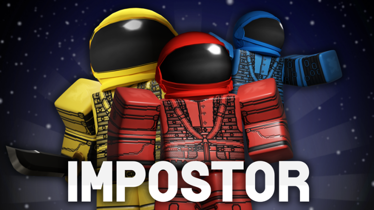

Также здесь имеется развитая торговая система и настраиваемые дома, больше Адопт ми испульзуется петомцами, их можно обменивать тоесть делать трейд.
_______________________________________________________________________________________________
2.Welcome to Bloxburg
Bloxburg: ВНИМАНИЕ ПЛЕЙС СТОИТ 25робаксов: Представляет симулятор жизни в мире, действие которого происходит в городе Блоксбург. Игроки должны заботиться о своём персонаже,
выполняя его желания. Кроме того, пользователи могут строить и обустраивать свой дом по желанию, развивать навыки, работать за деньги и исследовать большой город.
_______________________________________________________________________________________________
3. Murder Mystery 2

Murder Mystery 2: Плейс про преступление ВКРАТЦЕ НИЖЕ!
КРАТКО О ИГРЕ:
1.Невиновный, обычный человек, у которого в начале игры нет никакого оружия.
2.Шериф, этот игрок может пристрелить убийцу и так завершится раунд, невиновные будут спасены!
3.Убийца, задача одна всех уничтожить на карте.
_______________________________________________________________________________________________
4. Piggy
Piggy: История происходит по сценарию,
она была создана в стиле хоррора на основе популярного детского мультфильма «Свинка Пеппа» и шведской игры ужасов на выживание Granny.
_______________________________________________________________________________________________
5. BEE SWARM SIMULATOR
BEE SWARM SIMULATOR: Cимулятор пчеловода был создан разработчиком Onett его плейс достиг более 4 миллионов добавлений в избранное.
Здесь предоставляется возможность побывать в роли виртуального пчеловода.
Основная задача игры собрать пыльцу, и переходить на другие локации, тебе будут помогать твои друзья, пчёлы!
_______________________________________________________________________________________________
6. JailBreak
JailBreak: В данном плейсе можно играть за две стороны, полиция или бандит. ЗА БАНДИТА в игре можно грабить банки,
Покупать дома, грабить музеии, ювелирки или просто сидеть в тюрьме. ЗА ПОЛИЦЕЙСКОГО в игре можно арестовывать бандитов покупать дома и всё.
_______________________________________________________________________________________________
7. IMPOSTOR
IMPOSTOR: Плейс был создан по мотивам игры «Among us» В игре вы становитесь либо предателем или обычным человеком,
Обычный член экипажа просто бегает по кораблю и выполняет задания, а вот предатель должен помешать,
тоесть уничтожить обычных членов экипажа.
_______________________________________________________________________________________________
8. Arsenal
Arsenal: Плейс был сделан на подобие CSGO Описание CSGO можете почитать самостоятельно,
а плейс считается шутером, в котором можно играть за две команды, та команда которая наберёт больше очков победила!